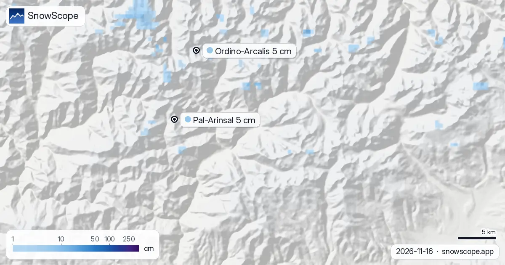
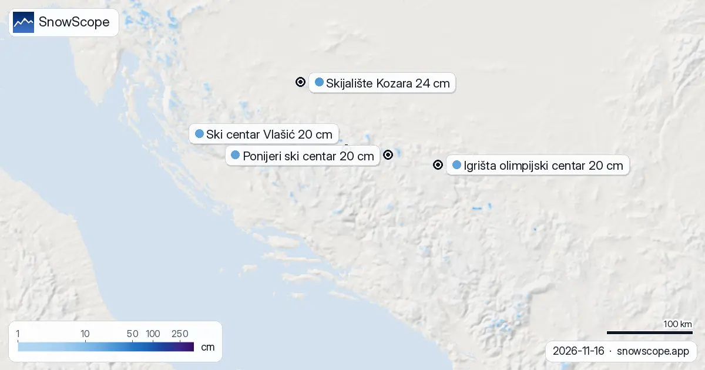
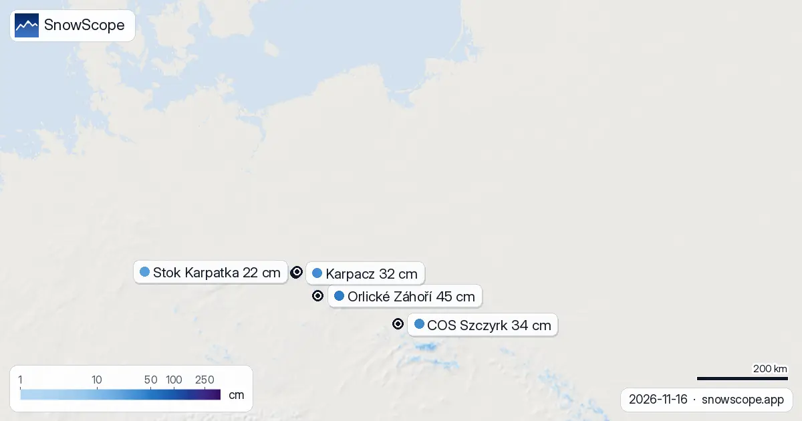

Bulletins neige · La neige en Europe, pays par pays
La neige en Europe, pays par pays: 140 km² de terrain enneigé en Albanie ce lundi, un gain de 80 km² en une journée. Cela représente 1 % du relief …
Neige en Albanie aujourd'hui : hauteur de neige et neige fraîche, 16 novembre 2026

140 km² de terrain enneigé en Albanie ce lundi, un gain de 80 km² en une journée. Cela représente 1 % du relief cartographié en Albanie.
Quelle part du pays est blanche
La limite de l'enneigement se situe vers 2 100 m. Les 40 km² de la semaine dernière ont augmenté de 100 km².
Neige en Albanie le 16 novembre : couverture, neige fraîche, hauteurs selon l'altitude, prochains jours et meilleures stations.

Neige en Andorre le 16 novembre : couverture, neige fraîche, hauteurs selon l'altitude, prochains jours et meilleures stations.

Neige en Autriche le 16 novembre : couverture, neige fraîche, hauteurs selon l'altitude, prochains jours et meilleures stations.

Neige en Bosnie-Herzégovine le 16 novembre : couverture, neige fraîche, hauteurs selon l'altitude, prochains jours et meilleures stations.

Neige en Bulgarie le 16 novembre : couverture, neige fraîche, hauteurs selon l'altitude, prochains jours et meilleures stations.

Neige en Croatie le 16 novembre : couverture, neige fraîche, hauteurs selon l'altitude, prochains jours et meilleures stations.

Neige en Tchéquie le 16 novembre : couverture, neige fraîche, hauteurs selon l'altitude, prochains jours et meilleures stations.

Neige en Finlande le 16 novembre : couverture, neige fraîche, hauteurs selon l'altitude, prochains jours et meilleures stations.

Neige en France le 16 novembre : couverture, neige fraîche, hauteurs selon l'altitude, prochains jours et meilleures stations.

Neige en Allemagne le 16 novembre : couverture, neige fraîche, hauteurs selon l'altitude, prochains jours et meilleures stations.

Neige en Grèce le 16 novembre : couverture, neige fraîche, hauteurs selon l'altitude, prochains jours et meilleures stations.

Neige en Hongrie le 16 novembre : couverture, neige fraîche, hauteurs selon l'altitude, prochains jours et meilleures stations.

Neige en Irlande le 16 novembre : couverture, neige fraîche, hauteurs selon l'altitude, prochains jours et meilleures stations.

Neige en Italie le 16 novembre : couverture, neige fraîche, hauteurs selon l'altitude, prochains jours et meilleures stations.

Neige au Kosovo le 16 novembre : couverture, neige fraîche, hauteurs selon l'altitude, prochains jours et meilleures stations.

Neige au Monténégro le 16 novembre : couverture, neige fraîche, hauteurs selon l'altitude, prochains jours et meilleures stations.

Neige en Macédoine du Nord le 16 novembre : couverture, neige fraîche, hauteurs selon l'altitude, prochains jours et meilleures stations.

Neige en Norvège le 16 novembre : couverture, neige fraîche, hauteurs selon l'altitude, prochains jours et meilleures stations.

Neige en Pologne le 16 novembre : couverture, neige fraîche, hauteurs selon l'altitude, prochains jours et meilleures stations.

Neige au Portugal le 16 novembre : couverture, neige fraîche, hauteurs selon l'altitude, prochains jours et meilleures stations.

Neige en Roumanie le 16 novembre : couverture, neige fraîche, hauteurs selon l'altitude, prochains jours et meilleures stations.

Neige en Serbie le 16 novembre : couverture, neige fraîche, hauteurs selon l'altitude, prochains jours et meilleures stations.

Neige en Slovaquie le 16 novembre : couverture, neige fraîche, hauteurs selon l'altitude, prochains jours et meilleures stations.

Neige en Slovénie le 16 novembre : couverture, neige fraîche, hauteurs selon l'altitude, prochains jours et meilleures stations.

Neige en Espagne le 16 novembre : couverture, neige fraîche, hauteurs selon l'altitude, prochains jours et meilleures stations.

Neige en Suède le 16 novembre : couverture, neige fraîche, hauteurs selon l'altitude, prochains jours et meilleures stations.

Neige en Suisse le 16 novembre : couverture, neige fraîche, hauteurs selon l'altitude, prochains jours et meilleures stations.

Neige au Royaume-Uni le 16 novembre : couverture, neige fraîche, hauteurs selon l'altitude, prochains jours et meilleures stations.

Neige dans les Carpates ukrainiennes le 16 novembre : couverture, neige fraîche, hauteurs selon l'altitude, prochains jours et meilleures stations.